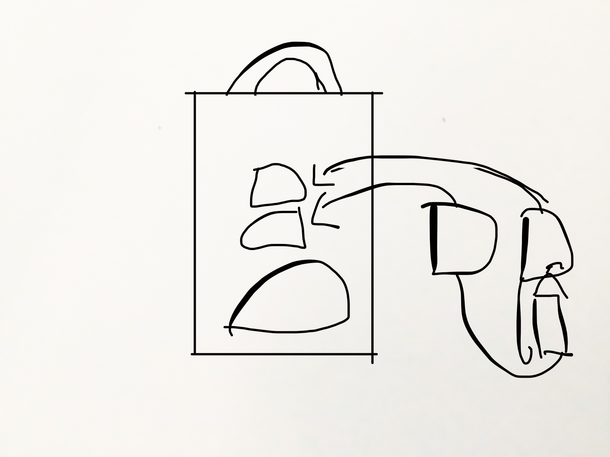
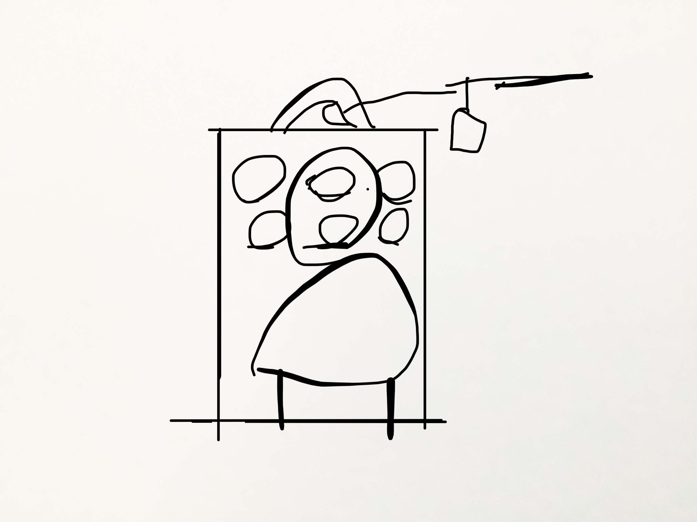
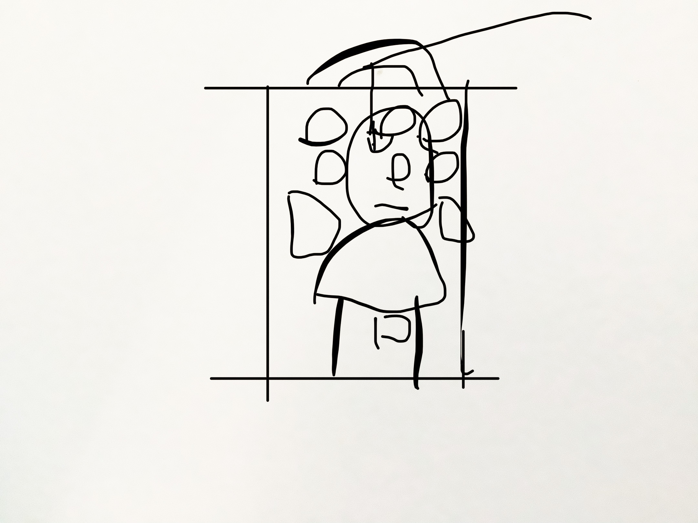
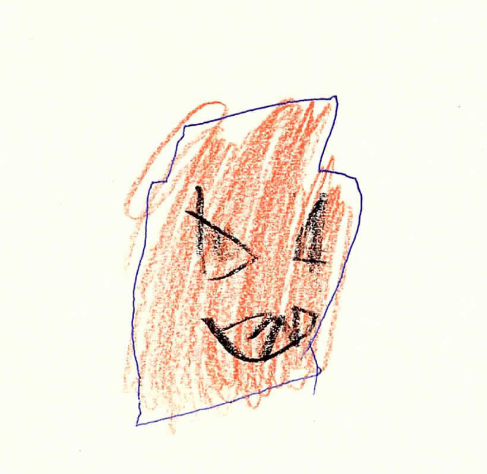

Basteltipps für Sankt Martin
Diesen Freitag ist es wieder soweit: Wir feiern Sankt Martin. Vielerorts werden am 11. November Lagerfeuer abgehalten und Menschen singen zusammen und laufen bei Dunkelheit mit Laternen durch die Straßen. Am meisten freuen sich Kinder über die Martinszüge und basteln fleißig ihre eigenen Laternen und Dekorationen.
Du hast auch Lust Sankt Martin zu feiern und suchst noch tolle Bastelideen? Dann bist du hier genau richtig!
KABU zeigt dir, wie du deine eigene Laterne basteln kannst und wünscht dir viel Spaß beim Nachmachen!
1. Bastelanleitung für eine Laterne aus Papier
Das brauchst du zum Basteln:
- Eine leere Papiertüte
- Einen Bleistift
- Etwas buntes Transparentpapier (die Farben darfst du dir selbst aussuchen)
- Einen Kleber oder Tesafilm
- Eine Schere
- Einen Laternenstab mit Licht
- Etwas Schnur
Und los geht’s!
💭 RoboBoard Und los geht’s!
So bastelst du deine Laterne:
-
Suche dir eine passende Papiertüte in deiner gewünschten Größe. Am besten eignen sich dafür einfarbige Papiertüten.
-
Male mit einem Bleistift verschiedene Muster und Formen wie Sterne oder Kreise auf die Vorder- und Rückseite deiner Papiertüte.
-
Schneide die aufgemalten Muster und Formen vorsichtig mit einer Schere aus. Lass dir dabei von deinen Eltern oder älteren Geschwister helfen.
- Nehme nun das bunte Transparentpapier und lege es hinter die ausgeschnittenen Muster und Formen. Wichtig ist, dass du das Transparentpapier in die Innenseite deiner Papiertüte legst. Bei Bedarf kannst du das Transparentpapier auch noch in die passende Größe zuschneiden. Als nächstes musst du mit einem Kleber oder Tesafilm das Transparentpapier in der Innenseite festkleben.

Tipp: Je nach Wunsch kannst du deinen Laternenschirm noch mit Bunt- und Filzstiften weiter verzieren.

- Zum Schluss musst du nur noch den Laternenstab mit Licht in die Öffnung der Papiertüte stecken und an den Papiertütenhenkeln mit der Schnur festbinden. Fertig ist deine Laterne aus Papier!

2. Bastelanleitung für eine Laterne aus Glas
Das brauchst du zum Basteln:
- Ein leeres Einweckglas
- Etwas buntes Transparentpapier (die Farben kannst du dir selbst aussuchen)
- Einen Kleister
- Ein Teelicht oder elektronisches Licht

So bastelst du deine Laterne:
-
Suche dir ein passendes Einweckglas in deiner gewünschten Größe. Am besten fragst du dazu deine Eltern, ob sie dir ein leeres Einweckglas aus der Küche geben können. Den Deckel brauchst du zum Basteln nicht.
-
Als erstes zerreißt du das bunte Transparentpapier in kleine Stücke.
-
Als nächstes musst du den Kleister in einer kleinen Schüssel anrühren, damit du die Schnipsel auf das Einwegglas kleben kannst. Beim Anrühren des Klebers kannst du deine Eltern oder älteren Geschwister um Hilfe fragen.
-
Jetzt kannst du die Papierschnipsel in den Kleister tunken und auf das Einwegglas kleben. Wichtig ist, dass du höchstens 2 Schichten auf das Einwegglas klebst, denn je mehr Schichten du bildest, desto undurchsichtiger wird das Glas.
Tipp: Je nach Wunsch kannst du deine Laternenglas noch weiter verzieren, z.B. mit Gesichtern aus Pappe. Alternativ kannst du das Laternenglas auch mit Acrylfarben bemalen.
-
Jetzt muss das beklebte Glas 1-2 Tage lang trocknen.
-
Zum Schluss musst du nur noch ein Teelicht oder ein elektronisches Licht vorsichtig in die Öffnung des Glases stellen.
Fertig ist deine Laterne aus Glas zum Dekorieren!
Wichtig: Die Kerze solltest du nur gemeinsam und mit Erlaubnis deiner Eltern anzünden.
💭 Sprechblase Wichtig: Die Kerze solltest du nur gemeinsam und mit Erlaubnis deiner Eltern anzünden.